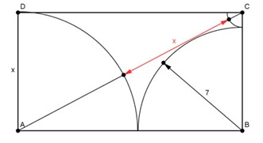

Pythagoras Aufgabe 87 Berechnen Sie die Länge der Strecke x in mm.

AC = x + x + (x - 7) AB = x + 7 Satz von Pythagoras im Dreieck ABC: AC2 = AB2 + BC2 (x + x + (x - 7))2 = (x + 7)2 + x2 (3x - 7)2 = (x + 7)2 + x2 9x2 - 42x + 49 = x2 + 14x + 49 + x2 |-49 9x2 - 42x = 2x2 + 14x | -2x2 7x2 - 42x = 14x | :x 7x - 42 = 14 | +42 7x = 56 | :7 x = 8 mm